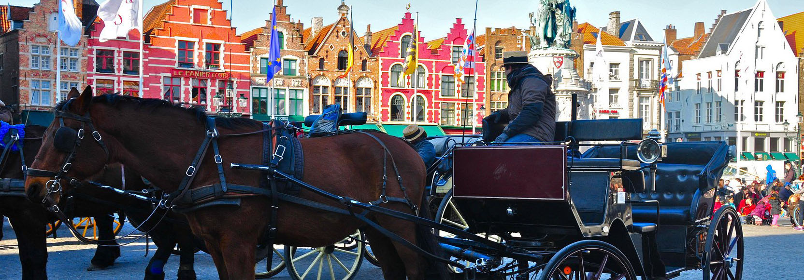

В Бельгии в прямом смысле есть на что посмотреть и чем восхититься, ну а экономической стабильности этого крошечного государства остается лишь серьезно завидовать. Колоритные исторические кварталы, словно сошедшие со страниц старинных книг, многочисленные музеи, хранящие бесценные полотна фламандских мастеров, изысканные рестораны, отмеченные Красным гидом Мишлена, – всеми этими богатствами Бельгия щедро делится с иностранными гостями. При достаточно беглом осмотре этот спокойный и благополучный уголок Европы чем-то напоминает своего северного соседа – Нидерланды. Те же дамбы и польдеры, живописные каналы, ветряные мельницы, даже в арт-галереях картины все тех же Босха и Брейгеля. Однако не спешите вешать ярлыки: различия между странами есть и значительные. Вот только чтобы рассмотреть их, придется задержаться в Бельгии на недельку-другую и проехаться не только по крупным городам, но и по провинциальным местечкам, где особенности национального характера выражены ярче и отчетливее.
